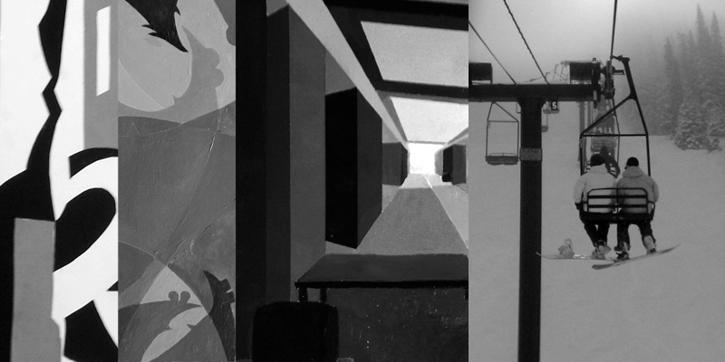

Hobbies? I've got a few...
SNOWBOARDING: Let me just start out by saying that I'm not nearly as good as Shaun White, Travis Rice and any number of pro boarders (really... who is?), but I do enjoy it... immensely. In 2010, a moment of sheer epicness, a couple of friends and I made a trip to Salt Lake City, Utah. It was some of the best pow I'd ever seen. Here are some of the resorts we went to.
GOLFING: Just picked this up a couple of years ago (started taking score this year). I will say that this is, by far, is my favorite leisure sport next to bowling. There's nothing like spending some time with friends on the course.
PAINTING: It wasn't until recently, this past summer, that I took up painting again. I took some classes here at State which helped me to not only improve on my drawing and painting skills but to also understand the processes that make up a piece (rule of thirds, horizon lines, vanishing points, etc.).
DRAWING: Drawing has always been a part of my life in some form or another. In 4th grade, drawing became something of an obsession to excape the boredom of class and to cater to my need to draw. The character's name was "Dude". He had aviator shades and a flatop. Everyday, in class, I would place him in scenes describing it as "Dude in the Ring (boxing)" etcetera. Man, those were simple times. I wish I had held onto to those drawings...